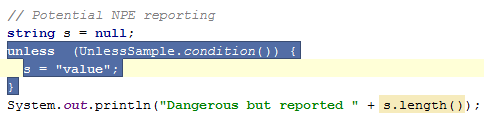

The
Control + Up/Down
key combination allows you to increase/decrease block selection. It ensures you always select valid subtrees of the AST. The usual
Shift + Arrow
keys way of text-like selection is also possible. 